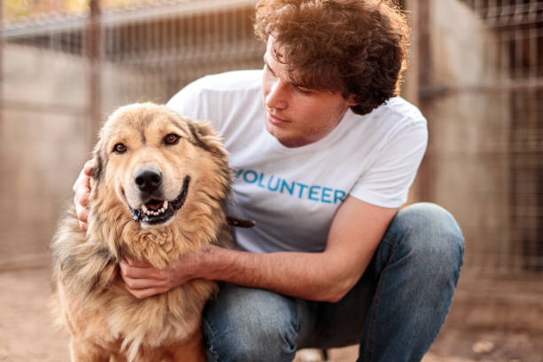
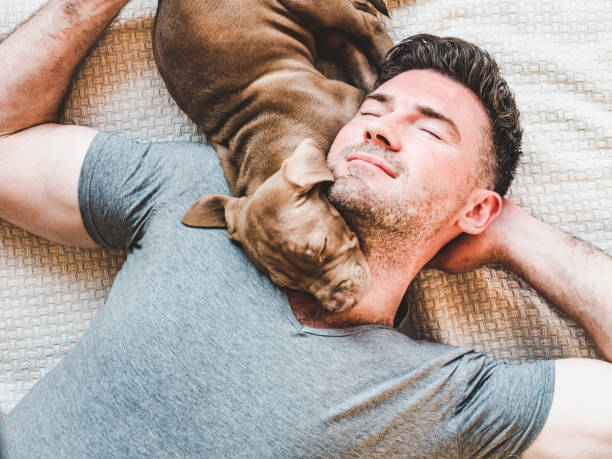
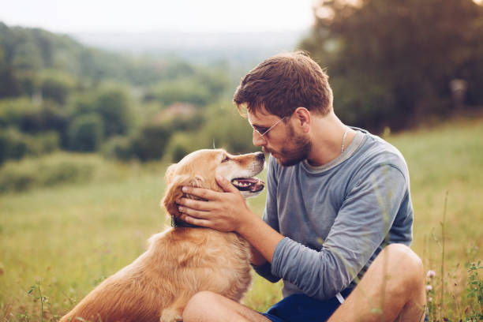

About Us
Legend’s Rescue is a non-profit organization established in 1969 in the Kathmandu district of Nepal. Legend’s Rescue is committed to creating a society where all animals are treated humanely. Protecting community dogs and animals from all forms of abuse, cruelty, and torture is the main focus of the work. In order for this to happen, Legend’s Rescue could not limit its program to saving animals and providing for their medical requirements. Legend’s Rescue started various projects for the welfare of animals and community dogs to stop animal cruelty. In order to create rigorous animal welfare policies, we promote animal welfare and work with government agencies and other organizations with similar visions. We believe that ending all forms of animal exploitation should be a goal for every individual, organization, and government.
We started out as a small group of animal lovers who wanted to improve the lives of our lovely but abandoned animals. We have treated and rescued more than 15,000 animals till now. In the beginning, people were not aware of the welfare of animals. With our dedication and humane education project, people are more aware of the ongoing animal cruelty. We receive many inquiries from people who want to help but are unsure of how to get started. So, we have come up with programs where we educate and equip people with the information and tools they need to make the right choices and take the essential steps. Animals in need of rescue and those who have been injured are served by a qualified team of veterinarians, technicians, and volunteers. Legend’s Rescure shelter currently houses a large number of wounded and paralyzed dogs, as well as abandoned farm animals that are being cared for and treated.
Legend’s Rescue has been working tirelessly to introduce animal welfare policies in Nepal to safeguard the welfare of animals and ensure penalties for any animal abuse and cruelty, along with running the shelter. Additionally, Legend’s Rescue aggressively promotes animal welfare awareness on a national level and educates the populace to have compassion for all animals.
| Title | Name | Image |
|---|---|---|
| Founder | Putali Kumari Shrestha | |
| Co-Founder | Hemp Bahadur Shrestha |  |
| Chief-Caretaker | Bu Sherchan |  |
| Veterinarian | Common-Sense Limbu |  |